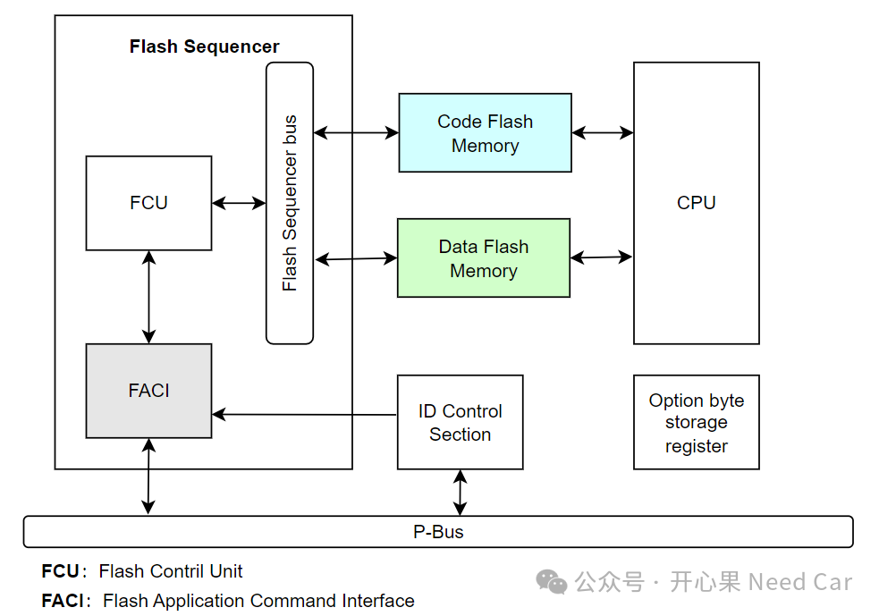

开心果 Need Car · 2024-06-11T18:31:00+08:00 · 微信原文
付费文章：当前仅保存公开试读部分，全文尚未获取。
汽车软件开发，很多时候，需要依靠配置工具，虽然配置工具简化了大量工作。但是，也对我们“屏蔽”了很多细节，使得我们对芯片特性一知半解。尤其在排查工程bug时，如果对细枝末节不理解，往往找不到问题的突破口，很多时候，我们只得靠猜、蒙，撞大运...
最近，研究了一下RH850 F1KM，主要研究它的信息安全部分。手撸了这块片子的安全算法以及DFlash驱动（ICUP对Data Flash的操作）。本文，特此"标记"我写Data Flash驱动踩的坑，走的弯路。
本文分享Data Flash驱动实现的核心点包括：
ICUP（Intellignet Cryptographic Unit Processor）核与PE核（主核）的交互过程；
软件如何解除Flash操作的硬件保护；
如何触发PE的Data Flash操作请求中断及注意事项；
PE是否需要应答ICUP的Data Flash操作请求；
ICUP操作FACI时的基地址与PE一样吗；
ICUP操作Data Flash的编程指令及注意事项（写这部分驱动的小伙伴，务必细心）；
如何设置ICUP操作的Secure Data Flash地址范围；
......
带着诸多细节疑问，本文将一一给出答案。
1、官方驱动库下载
对于瑞萨芯片的Flash驱动库，可以去其官网下载，具体链接如下：
https://www.renesas.com/us/en/software-tool/data-flash-libraries?downloads-type-filter=library
当然，Date Flash或者Code Flash的用户手册也可以在其官网下载。但是，对于ICUP操作Data Flash，直接使用官网的驱动库，ICUP并不能直接操作对应的Data Flash。
2、Flash操作相关模块
